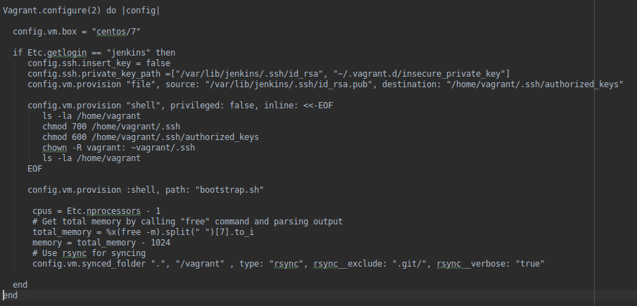

Jenkins/Vagrant/Fabric : transition DevOps
Adrien Sales / Michèle BarréTransformer notre dette en avantage
- Eliminer les parties endettées et coûteuses de notre SI
- Arrêter de parler de "philosophie DevOps" et initier l'implémentation
- Eprouver les outils DevOps
- Atteindre le déploiement continu
Build & Déploiement continus
- L'activité du code donne le tempo
- Build Continu : on prépare et met à disposition des artefacts en continu
- Déploiement Continu : on déploie les dits artefacts
On fait du DevOps si ... (1/2)
- On ne fait plus de demande de déploiement : on pousse du code
- On ne demande plus à déployer un Job, on déploie du code, une machine (ou tout autre type d'artefact) déja configurée
On fait du DevOps si ... (2/2)
- On ne déroule plus de procédures d'installation
- On produit des artefacts de manière automatique et transparente, qui se documentent eux-mêmes
- Les composants sont designés pour être cassés puis reconstruits en continu
Candidat : Job de Synchronisation des annuaires (téléphonie, AD, RH)
Composants principaux :
- IBM TDI (Tivoli Directory Integrator)
- ADLDS (Active Directory Lighweight Directory Services)
L'atout d'un Job est qu'il a un début, une fin et une planification : il est aisé à monitorer.
La plupart du temps un job ne tourne pas : c'est un très bon candidat pour les économies de ressources.
Combien de temps pour remonter l'environnement actuel au complet from scratch ?...et depuis un backup (quand le dernier a-t-il été testé) ?
... et si le déploiement nécessitait moins de temps qu'il n'en faut pour décrire les étapes du remontage complet de la solution ?
IBM TDI
- Uniquement utilisé sur ce processus
- Licence 700.000 FCFP/an pour 2 runs de 25 '/jour
- Déployé sur un serveur Windows dédié, monté et maintenu manuellement
- Pénible à installer/upgrader
- Pas d'investissement en connaissance
1000 FCFP/run en coût de licence TDI uniquement, soit 2000 FCFP/j.
Microsoft ADLDS
- Uniquement utilisé pour ce processus
- Actuellement pénible à installer
- Aucun investissement en connaissance
- Consolide/stocke les données
- Tourne sur un serveur dédié, manuellement monté, sous exploité
Bilan système et financier
- Un serveur dédié qui tourne 24/7 pour deux exécutions quotidennes de 25'
- Un serveur LDAP complet qui tourne pour servir < 2 Mo de données
- Un ETL coûteux, sous-exploité et pas taillé pour une prise en main rapide par des développeurs
Objectif
Implémenter un processus
- Aisé à prendre en main par des développeurs, des robots, des admins
- S'appuie sur des composants open source, facilement déployables (voire déja déployés en automatique) et exploités
Qui s'intègre ...
- Déployable via du code sur notre infrastructure, mais également sur des plateformes cloud ou hébergées
- Intégration native dans la chaîne DevOps : build et déploiement continu
EAGLE !
Rendre ce développement rapidement exploitable, on ne crée pas un prototype de laboratoire.

Mode opératoire
- Coller aux technologies structurantes actuellement maîtrisées,
- Ouvrir les perspectives vers des technologies plus en rupture apparente avec celles déja utilisées.
Les briques
- L'OS : CentOS 7
- Base de donnée relationelle : PostgreSQL
- Utilisation d'outils de déploiements maîtrisés et exploités tels que Liquibase
- Virtualisation
- Poursuivre dans l'investissement sur Python et industrialiser les tâches/jobs
Outils
Tout est versionné et buildé en continu, pour cela :
- Vagrant
- Jenkins
- Fabric/Python
- Git

Nous permet de créer et configurer des environnements de développement virtuels en toute autonomie, via du code.

Moteur d'intégration continue : c'est lui qui va travailler pour nous.
Le "serveur sous le bureau"
Déployé en protypage sur un PC musclé, sur une Fedora 26.

ben...et Travis ?!
Travis est un outil parfait, cependant, accéder aux composants sur le LAN n'était pas optimal : il nous fallait l'équivalent, chez nous, pour commencer en tout cas.
Vagrant: les grands concepts
- Les boxes
- Le provisioning (shell, puppet, chef, ansible)
- Les Providers (VirtualBox, libvirt, VmWare Workstation, vSphere, XenServer, aws, ...)
- La destruction
Vagrant : le coût d'entrée
- Provisioning avec du shell : aucun background puppet requis
- Code testé directement sur l'architecture cible sur le poste de dév
- Le développeur, via le bootstrap.sh documente l'installation, via du code
Vagrant : le coût d'entrée
- VirtualBox comme provider sur le poste de dev
- Culture de la construction/destruction : il est sain de régulièrement "tout casser"
La virtualisation : VM, OS puis APP

Python/fabric: l'officialisation
- Arrivé à la DSI par le SIG et ses Jobs d'intégration
- Utilisé par les dévelopeurs pour automatiser et documenter des tâches répétitives et complexes
- Fabric permet de rendre ces scripts documentables notamment dans leur exécution.
Python : exemples de tâches automatisées
- Export/import de bases de données, download/upload ftp, màj de Redmine, ...
- Installation de Tomcats en intégration
- Industrialisation du Sprint 0
Industrialisation du Sprint 0
- Initialisation de projets java et liquibase
- Clonage des archetypes maven dispos sur Github
- Génération des squelettes des projets à partir des archetypes
- Création des repos sur Github (api Python Github)
- Push du code sur les repos
- Attribution des accès
Industrialisation du Sprint 0
- Activation des repos sur Travis pour l'intégration continue
- Création de channels Slack pour le suivi des dev (api Python Slack)
- Encryption des différentes variables utilisées dans Travis
- Création de webhook Github/Redmine pour le suivi des commits
Fabric est à la fois une librairie et un outil de ligne de commande permettant, via ssh, de déployer des applications ou d'effectuer des tâches d'administration système.
Idée
Assurer un développement cadré, des installations et exécutions aisées, via de la configuration automatisable.
Fabric et admin système
Fabric permet aussi de lancer des commandes ssh sur des collections de serveurs, mais dans ce cadre, c'est davantage pour ses capacités à lier du code complexe à des tâches simples, documentées et lançables via ssh.
Packagé pour toutes les plateformes, tous les OS, avec un écosystème plus que complet qui en rend l'exploitation très aisée.
Travis : le disparu ?
Durant ce chantier, de part le besoin d'accéder à des éléments sur notre LAN, nous n'avons pas exploité Travis CI mais nous reviendrons sur ce point très spécifique, particulièrement impactant et très clivant au final.
Montage de la platforme
- Installation de l'OS
- Installation manuelle de Jenkins, puis des plugins pour s'intégrer avec Github et Slack
- Installation de Vagrant et VirtualBox, laborieux sur Fedora 26
- Téléchargement(s) de la VagrantBox (VM) CentOS 7
- Configuration de SELinux côté Fedora pour la synchronisation des fichiers entre le serveur et la VM CentOS (3 jours)
Difficultés rencontrées : débit, spécificités de l'OS (SE Linux)
Montage de la platforme
Configuration de la Vagrant Box : Vagrantfile
Montage de la platforme
Configuration de la Vagrant Box : bootstrap.sh
Montage de la platforme
Configuration de la Vagrant Box : requirements.txt
Montage de la platforme
Configuration de la Vagrant Box : bootstrap.sh
Exploitation
- Développement en Python/Fabric du job de synchro de l'annuaire
- Mise en place des builds automatiques Jenkins
- branche de dev sur commit
- branche qualification via cron
- Activation des notifications dans Slack en cas d'erreur et de retour en marche
- Extinction de la VM à la fin du job/build
PAAS
[...] permet de mettre à disposition des entreprises un environnement d'exécution rapidement disponible, en leur laissant la maîtrise des applications qu'elles peuvent installer, configurer et utiliser elles-mêmes. Il permet donc d'héberger des applications qui ne sont pas adaptées au modèle du SaaS (par exemple des applications spécifiques, [...].
Règle de conduite
- On ne stocke rien en local
- On pousse/pompe vers/depuis d'autres services externes
- On part du postulat que les services nécessaires (log, base de données, monitoring, ...) sont fournis
On garde la philosophie Travis d'un "contenant" se détruisant totalement après chaque exécution.
Jenkins au boulot : Le Job de synchronisation
- Clone de la repo Git
- Boot de l'image Vagrant
- Installation du job (y compris base de données)
- Exécution du job de synchronisation (ssh)
- Envoi de logs vers des plateformes dédiées
- Récupérer le code retour
- Déclencher un ou des événements suite au code retour, par exemple via un Webhook slack
- Arrêt de la VM
Démos
push vs. pull
- Pull : j'attends quelque chose, je vais chercher
- Push : j'envoie quelque chose pour qu'un traitement se déclenche par exemple
Le Job de synchronisation : démo en manuel
Lancer le job manuellement, à la demande.
Le Job de synchronisation : démo en cron
En production, besoin d'exécutions périodiques.
Le Job de synchronisation déploiement continu
Démo d'un run qui démarre tout seul suite à un événement sur du code changé sur une branche spécifique.
Déploiement continu objectif atteint
Etapes d'un déploiement de job à la DSI
- Mise à jour du code sur Github et tag de la version par le SED
- Une demande de déploiement contenant la procédure à suivre est rédigée par le SED (pour la semaine N+1)
- Le lundi matin, réunion à 9h entre SED et SIE-Infra pour planifier les demandes
- Si trop de demandes, les déploiements sont décalés à la semaine suivante
- Chaque mardi et jeudi, les déploiements sont effectués par le SIE, en suivant la procédure de déploiement
Cas : mise à jour driver psql
- Si le job requiert de nouvelles libs, le SED doit faire une demande d'action en pré-requis à la demande de déploiement
- Le SIE planifie la demande : les lib devront être téléchargées et installées manuellement par le SIE
Etapes du déploiement avec Jenkins
- Mise à jour du code sur Github et tag de la version
- Merge sur la branche "QUAL"
- Jenkins fera le checkout du nouveau code et exécutera la nouvelle version du job aux horaires habituels
- Si le job requiert de nouvelles libs, elles seront téléchargées et installées lors du démarrage de la VM (provisionning)
Différences entre déploiement et exécution ?
La transition
Transformer le déploiement en exécution.
Les bémols
- Toujours besoin d'un conteneur pour les VMs
- Une VM c'est gros en mémoire/ressources
- La Box utilisée n'est pas maintenue par les infras
- Tourne actuellement sur un PC sous le bureau
Les bémols : le provisioning
Les gains par rapport à aujourd'hui
- Création des VMs à la demande : actuellement 2 serveurs tournent en continu la plupart du temps pour rien et ne se mettent pas à jour
- La Box Vagrant utilisée n'est pas maintenue par les infras : il suffit pour cela de créer notre propre template CentOS 7 : nous sommes dans DevOps
Les bémols : le provisioning
Les gains par rapport à aujourd'hui
- On tourne ça sur un PC sous le bureau : on peut provisionner directement sur VSphere, cela se fait via le code : nous sommes dans DevOps
- Une VM c'est gros en mémoire/ressources : d'autres technologies existent, plus économiques mais nécessitent un saut technologique
Difficultés rencontrées
- Pas habitué à gérer des problèmes propres aux distrib rpm : SELinux (rsync between vagrant image and code)
- Mises à jour parfois lentes des vms ou des téléchargement initiaux des boxes
- Il a fallu monter une machine complète avec un OS complet, installer les paquets, configurer Jenkins, ...
Difficultés rencontrées
- Sur Jenkins, on clique au lieu de coder les choses
- Quand on veut faire tourner le build sur Travis, les paquets rpm et deb n'ont pas forcément les mêmes noms
Avec Travis c'est "plus facile et plus rapide"
- Tout n'est que code, y compris la configuration
- On n'a pas besoin de demander des accès à des ressources
- On ne consomme aucune ressource ni sur nos postes ni sur notre infra
- Les accès aux repos sont très rapides (on est sur Amazon)
Au final ce qui compte, ce n'est pas l'OS sur lequel tourne le job, mais bien que le job tourne.
Ne peut-t-on préparer une petite "image" qui tournerait partout...sur du debian, du CentOS, du Mac, du Windows ou n'importe quel autre système qui saurait récupérer puis exécuter ce type d'artefact ?
Travis chez nous
Travis Enterprise : mais est-ce vraiment ce que nous voulons ?
Mais que fait Travis exactement ?
Comment fait-t-il pour être si rapide ?
Virtualisation vs containeurisation

Avec la virtualisation, les systèmes d’exploitation ont pu être dissociés des machines sur lesquels ils tournent.
Avec la conteneurisation, ce sont les logiciels eux-mêmes qui gagnent de l’autonomie vis-à-vis des systèmes d’exploitation.
Les logiciels s’adaptent sans développements supplémentaires, à tous les environnements.
Conteneurisation, en PROD, ...
et si on le faisait, là, tout de suite ... sans demande de déploiement, une action profitable à tous et qui respecte le "code de consuite" ?
Le Seigneur Naoshige dit aussi :
Si on s’élance sans vigueur, sept sur dix des actions entreprises tournent court. Il est extrêmement difficile de prendre des décisions en état d’agitation. Par contre, si sans s’occuper des conséquences mineures, on aborde les problèmes avec l’esprit aiguisé comme un rasoir, on trouve toujours la solution en moins de temps qu’il n’en faut pour souffler sept fois »
Monitoring des applications publiées sur le Web
Monitorer, depuis le Web nos propres applications, via de la conteneurisation : Vendredi 01/12/2017, vous avez 3 heures pour développer et déployer durablement la solution.
Impacts stratégies
- On peut faire ça pour toutes nos applis publiées ?
- Publier les existantes sur le web pour rapidement les monitorer ?
- Déployer/protoyper la technologie pour monitorer l'interne avec la même technologie ?
Mais...
si je comprends bien, il serait plus facile et rapide de monitorer nos services publiés sur le web ... depuis l'extérieur ?!